Chat X.509 1.0
 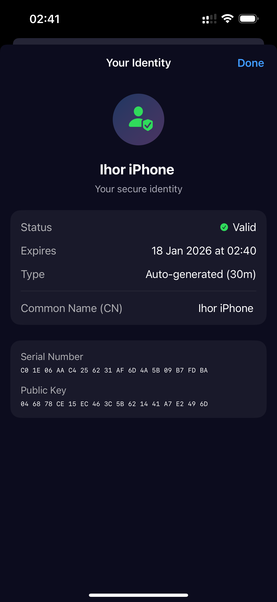
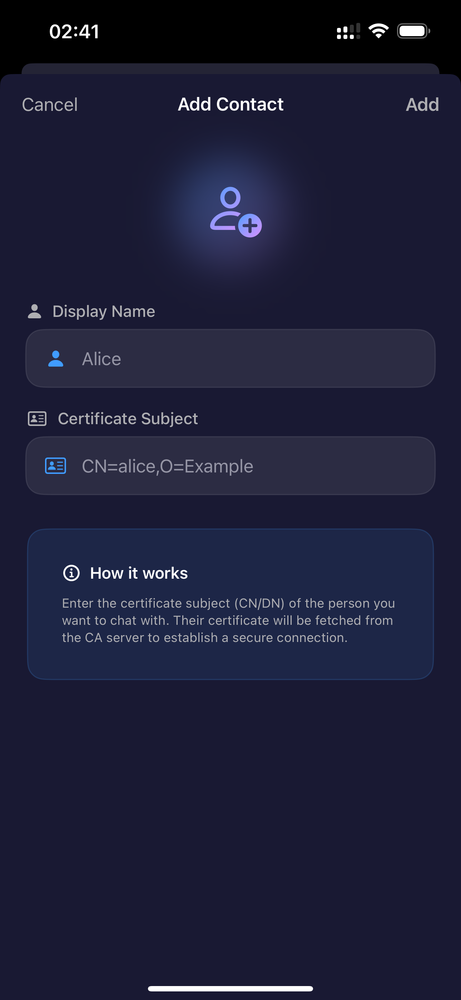
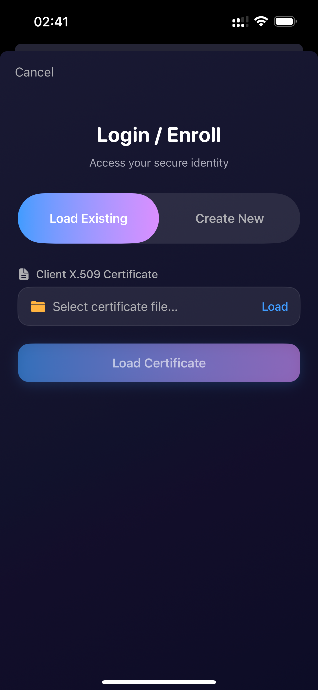
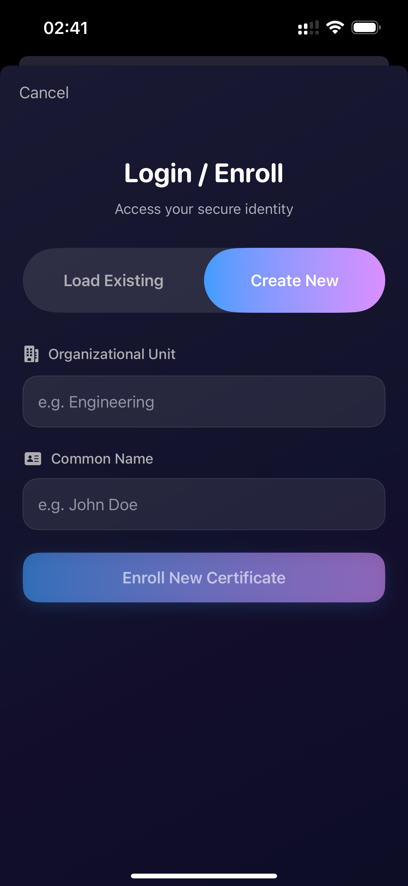
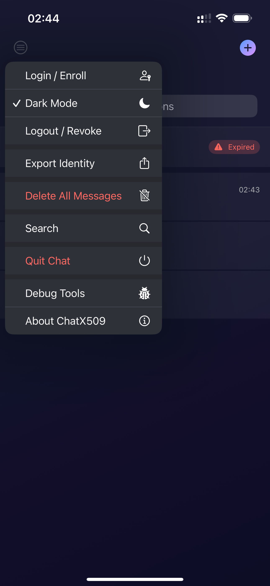
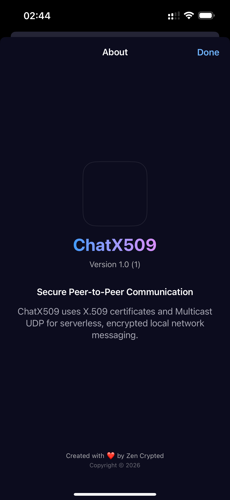
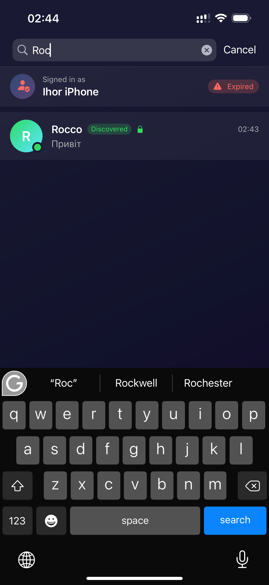
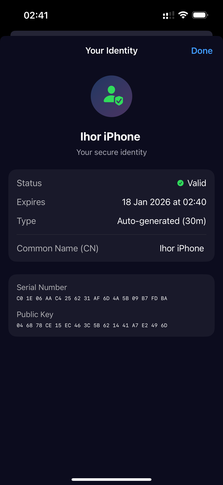
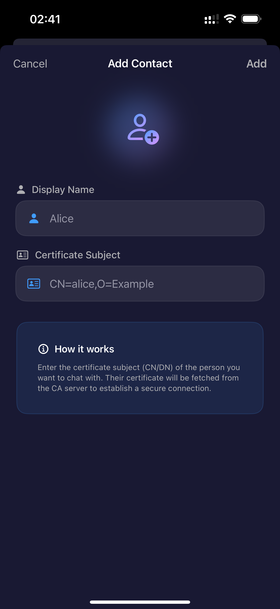
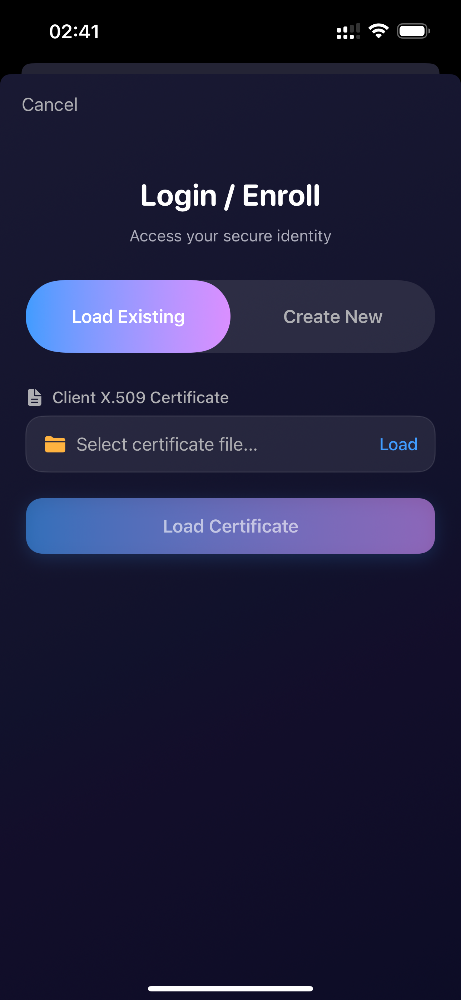
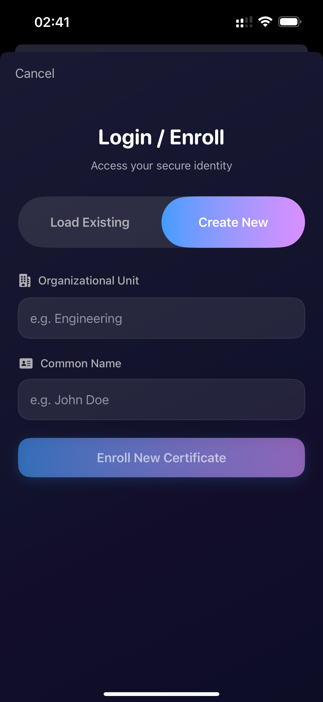
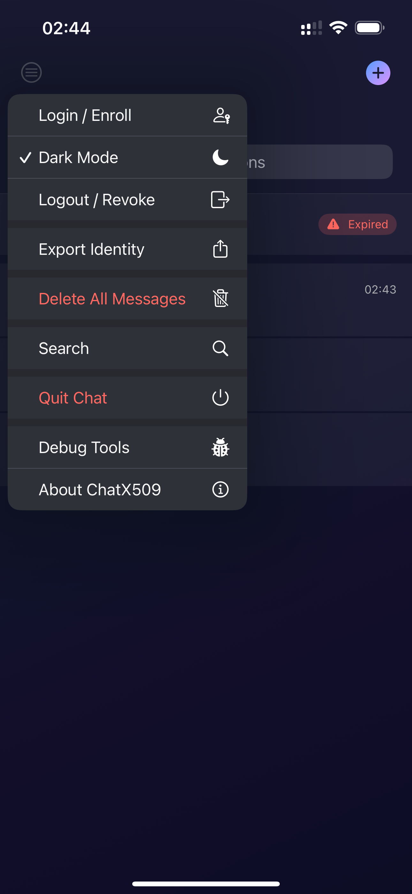
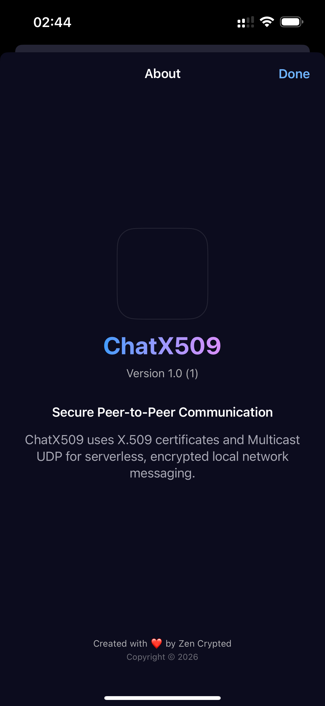
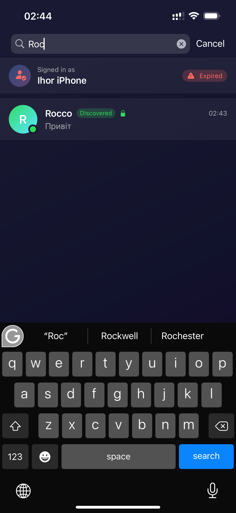ПРИНЦИПИ
Компанія користується наступними принципами які формують цілі продукту:
Конфіденційність. Кожне повідомлення шифрується за допомогою моделей полів Галуа GF(2^m) GCM або з використанням еліптичних кривих та групових операції на них, які зберігаються в X.509 CMS конвертах. Нешифровані месаджі не в CMS конвертах заборонені в системі.
Верифіковуваність. Повний вихідний код чат X.509 клієнтів і серверних рішень CHAT доступний на GitHub. Це дає змогу зацікавленим сторонам перевірити код на безпеку та правильність, а не як у інших криптографічних провайдерів України. Всі серверні субкомпоненти системи написані на Erlang та доступні для верифікації та ліцензування публічно. Єдиний і повний автор усіх компонент системи який здійснює свою політику згідно BDFL собору є Максим Сохацький.
Інтероперабельність. Додаток відповідає світовим та державним телекомунікаційним (ISO/IETF/ITU/IEEE/ANSI) та криптографічним (NIST/FIPS) стандартам . Це означає, що ми не придумали нічого свого, а лише реалізували усе у відповідності до стандартів, як це робить Nokia, Siemens, Ericsson, Apple, Microsoft, Google, тощо.
Мінімалістичність. Базовий додаток займає 5МБ, ми переконані, що якісне програмне забезпечення вимагає верифікації на всіх рівнях, а отже повинно бути мінімалістичним. Ми взяли за основу сучасний SwiftUI декларативний фреймворк і повторили в ньому еститику рідного додатку.
ЦІЛІ
Контакти не зберігаються на серверах. Вся контактна інформація про ваші підписки, чати, канали, та компанії може зберігатися ексклюзивно на клієнті. Після логіна на іншому присторії користовач має змогу отримати контактну книгу (ростер) з іншого клієнта, який працює на іншому пристрої;
Повідомлення не зберігаються на серверах. Транзієнта оперативна черга доставки повідомлень на MNESIA. Кожне повідомлення після останнього кроку отримання квитанції про доставку кореспондентом знищується на сервері і залишається відтепер тільки на клієнті. Так працювали перші версії Viber;
Метадані не зберігаються на серверах. Месенжер не зберігає ніяких метаданих, як то локація, IP адреса, інформація про апаратуру клієнта, тощо. ЧАТ використовує тільки наступні внутрішнін ідетифікатори: client, device, profile, roster виключно для роутінга повідомлень. Користувач також має змогу обрати зберігати контактну книгу (ростер) не на сервері, а на клієнті;
СУСПІЛЬСТВО
Зроблено для людей:
— Безкоштовний захищений анонімний месенджер;
— Безкоштовний захищений веріфікований месенджер;
— Безпека персональних даних при спілкуванні в Інтернеті;
— Календар (iCal) та Контакт (vCard) органайзер;
— Референсний iOS UI дизайн, додаток без залежностей;
— Відкритий консольний клієнт;
ДЕРЖАВА
Підтримка програми інформатизації:
— B2C сервісні канали для ОВВ;
— Цифровізація держпослуг та звернень громадян;
— Використання електронного підпису документів онлайн;
— Інтегровані системи масового оповіщення;
— Державний або корпоративний ДСТУ 4145 логін.
БІЗНЕС
Форми співробітництва:
— B2C сервісні канали для Бізнесу;
— Автономні впровадження на ВАШИХ потужностях;
— Хостинг сервісу по підписці на НАШИХ потужностях;
— Багато-ростерні конфігурації по підписці;
— Інтеграційне API SDK для партнерських програм;
— Конфігурація під потреби бізнесу.
ПРОТОКОЛ
Шифри Каналів, Повідомлень і Сервісів. Ключі які використовують користувачі складаються з трьох типів-пар (можна більше, але типів всього три): 1) Перша пара ключів SECP384R1 забезпечує безпеку каналу TLS 1.3 засобами еліптичної криптографії власного АЦСК/CA; 2) Друга пара ключів ED25519 забезпечує безпеку повідомлень; 3) Третя пара ключів забезпечує доступ до державних та юридичних сервісів ДСТУ-4145. Кожен учасник системи перед комунікацією здійснює реанонс своїх публічних частин цих асиметричних ключів.
Інфраструктура PKI X.509. Єдиний додаток як в часи IRC та XMPP забезпечує доступ до всіх серверів сумісних з X.509 таких як CHAT, LDAP, OCSP, TSP, DNSSEC, CMP, EST. Таким чином клієнт підримує довільну кількість ключів та довільну кількість серверів. І вся ця інформація зберігається тільки на клієнті. Сам клієнт може виступати ефімерним CA у версії протоколу v1.
Sokhatsky Messenger Protocol v1 описаний в репозиторії MESSAGE клієнта і визначає три конверти для маршрутизаціх системних повідомлень Accouncement, Message, і Ack (з відкритими заголовками), що передаються по UDP мультікаст. Всередині Announcement містяться X.509 сертифікати, і коли клієнти домовляються про спілкування, передаються пари Message з CMS конвертом і квитанція про доставку Acknowledgement з номером Message.id. Кожен термінал виступає кореневим CA.
Sokhatsky Messenger Protocol v2 описаний в і в репозиторії CHAT сервера, але поки не реалізований. Чекайте реліз на найближче велике свято. Подібна версія протоколу була апробована у виробництві в 2016 році з нашим фірмовим Erlang/OTP MQTT брокером, знаним як v3.
ХАРАКТЕРИСТИКИ
СТАНДАРТИ
NIST: SP 800 38D-56A-57-162, P-384, P-571;
ISO: 15946 10646 8824 8825;
ANSI: X9-64, X9-62;
FIPS: PUB 180-4;
ДСТУ: 4541 28147 GF(2^509);
ITU: X.509 (PKI), X.894 (CMS), X.680-X.683 X.690-697 (ASN.1);
ДССЗІ: #112 14.05.2010 #1236/5/453 20.08.2012 #687 27.10.2020.
КРИПТОГРАФІЧНІ АЛГОРИТМИ
Протоколи ключів: SECP-571r1,
GF(2^509);
Похідні ключі: KDF, PBDKF2, HKDF, AES-KW;
Шифри: AES-CBC, AES-GCM, AES-CCM, КАЛИНА;
Хеші: SHA-2, POLY-1305, AES-CMAK, КУПИНА, CAdES;
Протоколи груп: MLS;
Постквантова критпографія: KYBER, IBE.